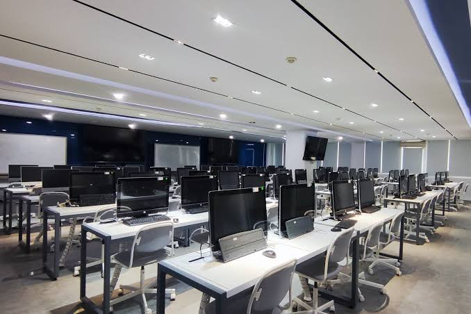
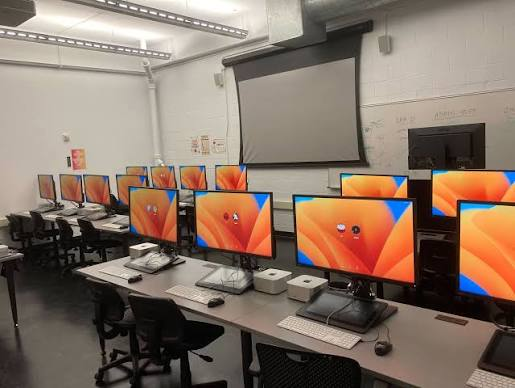

Laboratorium Komputer Modern
Ruangan laboratorium yang dilengkapi perangkat komputer, meja kerja, dan kursi untuk mendukung kegiatan belajar serta praktik informatika.
Informasi profil akademik, riwayat pendidikan, dan rencana studi lanjut di bidang teknologi.
| Nama Lengkap | Julieta Abdau Izzati |
|---|---|
| Kelas / Jurusan | XII - Informatika / Rekayasa Perangkat Lunak |
| Asal Sekolah | SMAN 2 Mojokerto |
| Riwayat Pendidikan | SDN Wates V (2015-2021) • SMPN 1 Mojokerto (2021-2024) • SMAN 2 Mojokerto (2024-Sekarang) |
| Minat Studi Masa Depan | Penerbang |
Dokumentasi kegiatan praktikum di laboratorium komputer maupun eksperimen perangkat keras di sekolah.

Ruangan laboratorium yang dilengkapi perangkat komputer, meja kerja, dan kursi untuk mendukung kegiatan belajar serta praktik informatika.

Deretan perangkat komputer di ruang laboratorium digunakan untuk mempelajari aplikasi, sistem operasi, dan materi pembelajaran teknologi.
Beberapa layar menampilkan jaringan, grafik, dan data digital sebagai ilustrasi kegiatan pemantauan sistem serta keamanan jaringan komputer.